A1 → C2
Percorso QCER completo, con checkpoint ed esami di livello.
Ti è l'app per imparare l'italiano davvero — dallo zero al C2, con un metodo pensato per farti parlare, capire, leggere e scrivere l'italiano vivo di ogni giorno, non quello dei manuali.
Percorso QCER completo, con checkpoint ed esami di livello.
Grammatica e traduzioni in 14 lingue, non solo in inglese.
Parole nel dizionario, con esempi, sinonimi e famiglie.
Romanzi italiani riscritti e graduati per il tuo livello.
Scorri per vedere il percorso, gli esercizi, l'edicola e i romanzi.
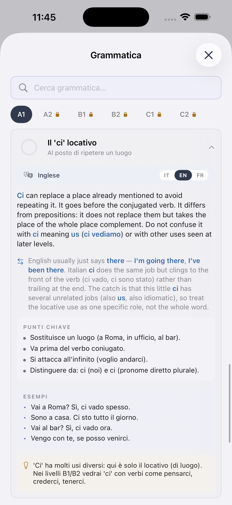


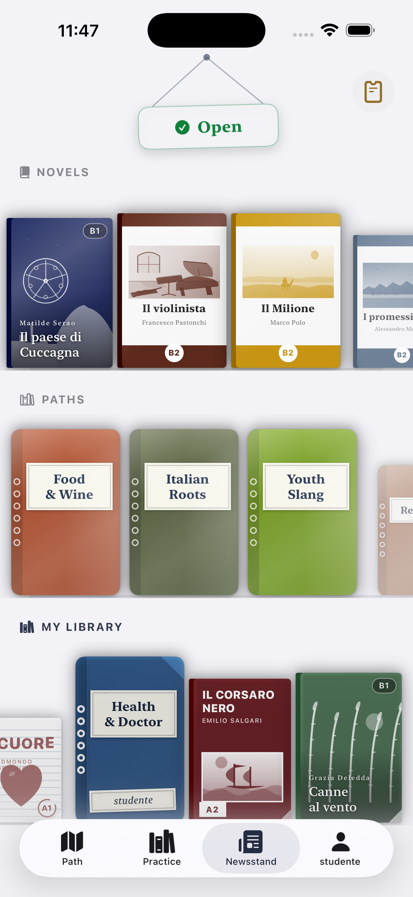

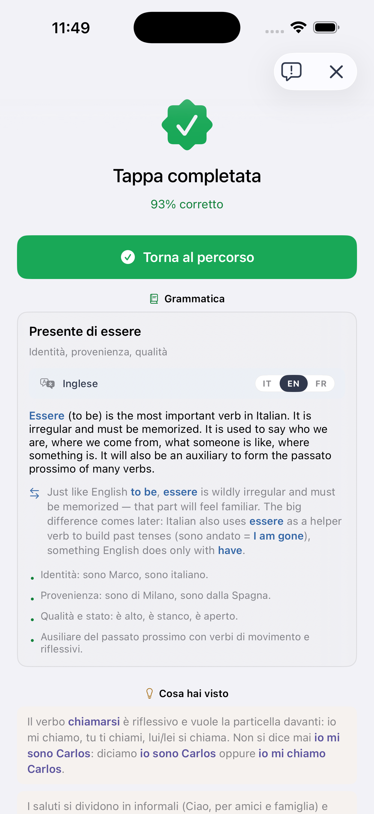

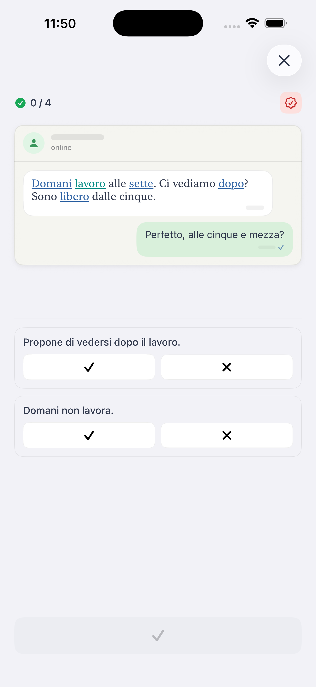

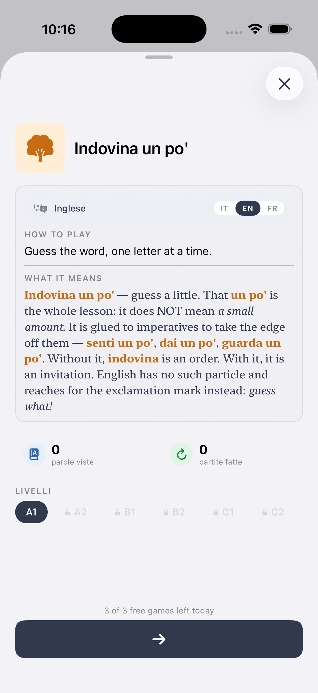
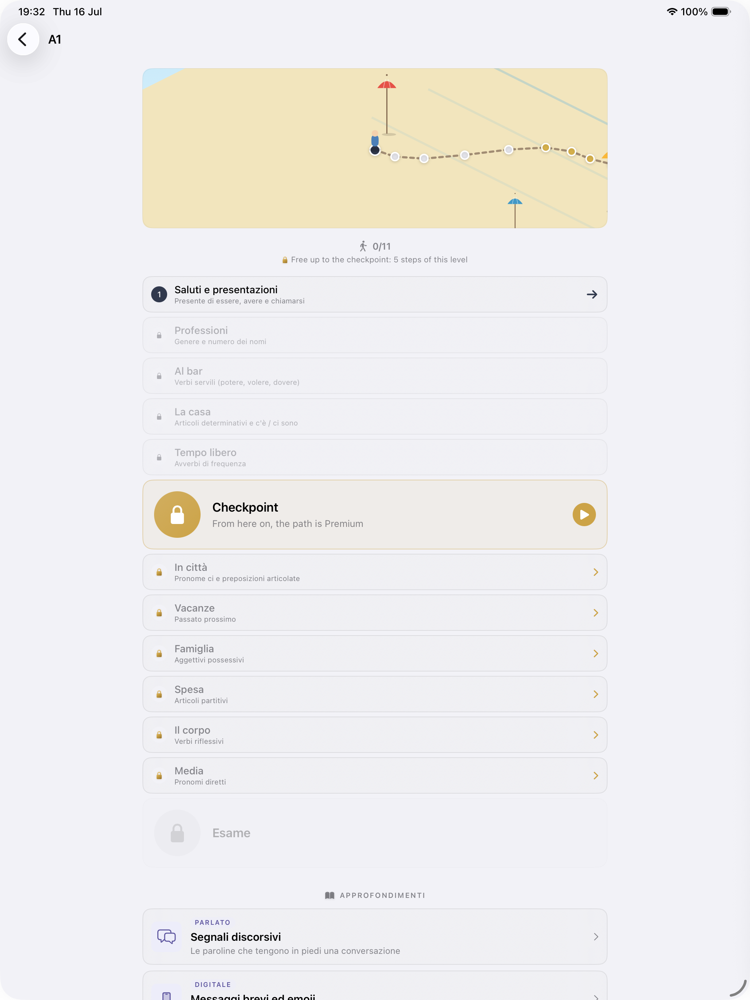
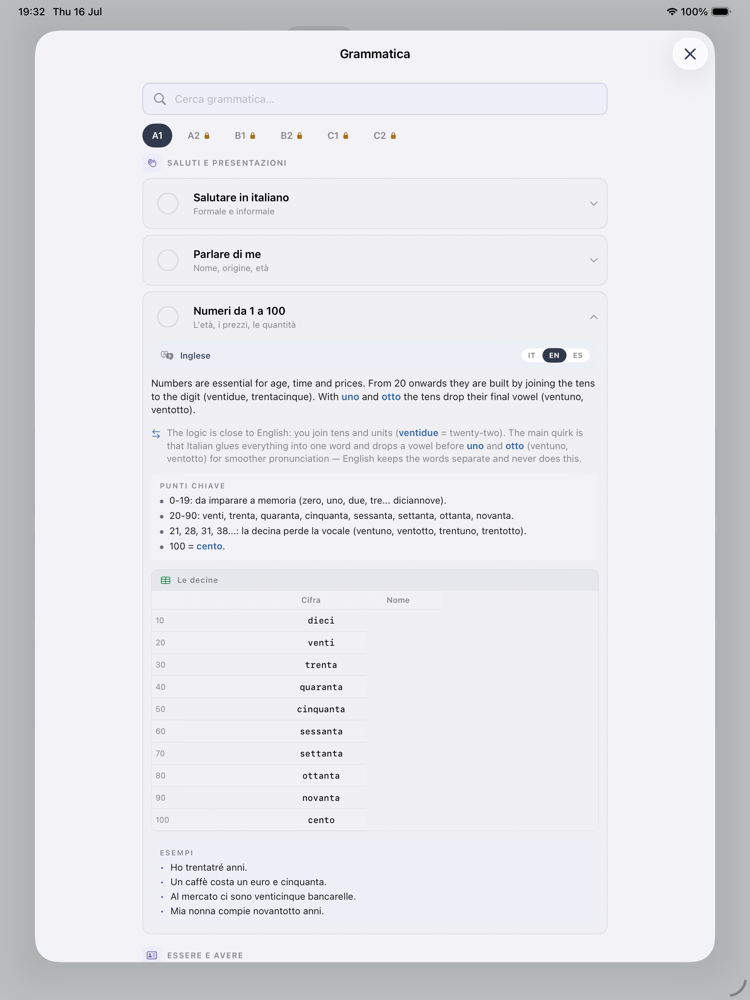
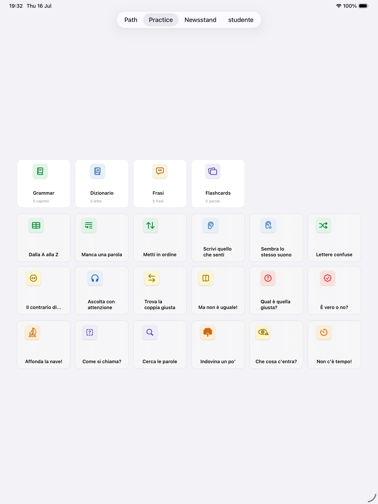
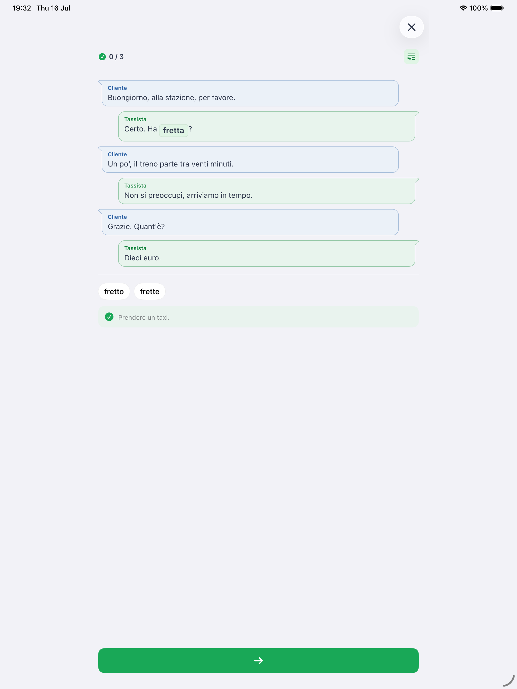
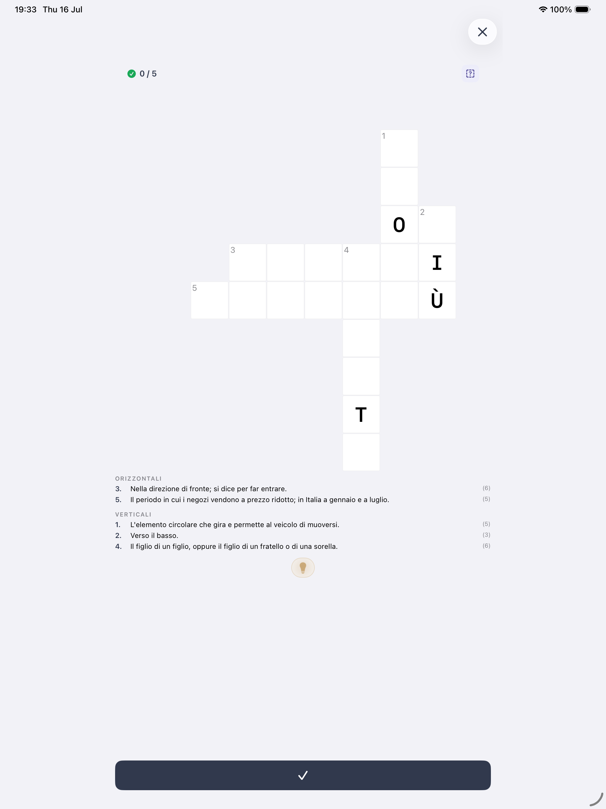
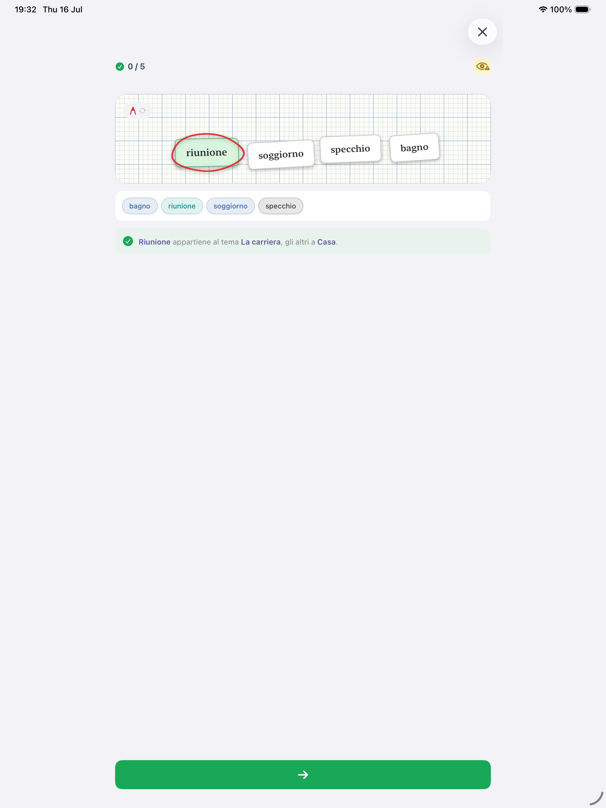
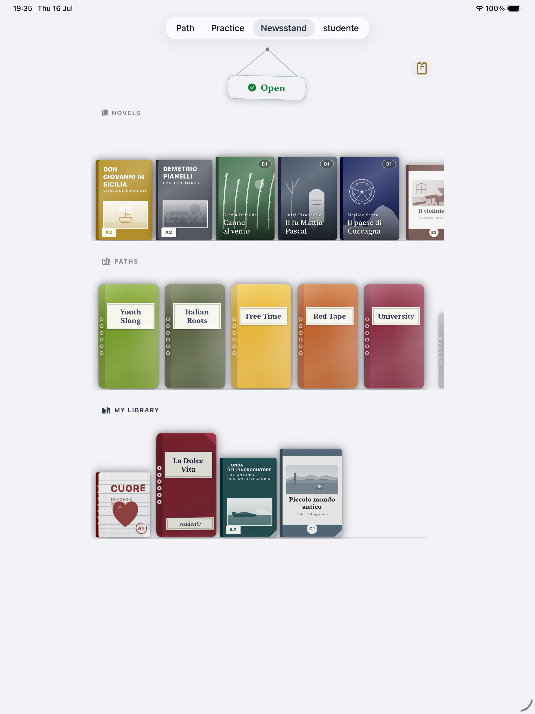
Quello che ti aspetteresti da un manuale serio, con il ritmo di un'app.
Dallo zero al C2 seguendo i livelli ufficiali europei. Ogni livello ha tappe di grammatica, vocabolario, cultura e comprensione, con checkpoint ed esami di livello.
Sai sempre dove sei e cosa manca per il prossimo scalino.
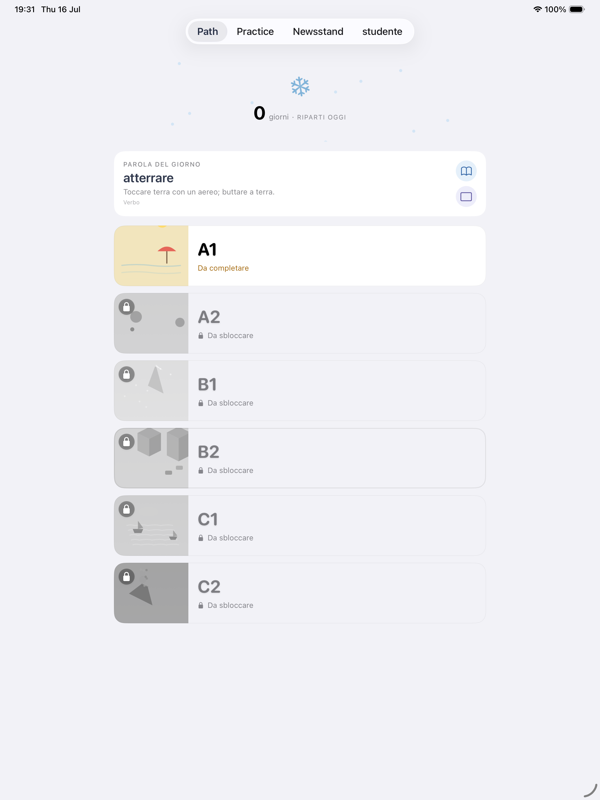
Carriera per il lavoro, Burocrazia per i documenti, Gergo dei giovani, La dolce vita, Italiani famosi, Viaggi, Moda, Motori, Università, Radici, Idiomi. Ogni libro copre un aspetto dell'italiano vivo, dall'A1 al C2. Il catalogo continua a crescere.
Accanto ai libri tematici, i grandi romanzi italiani: Manzoni, Verga, Pirandello, De Amicis, Serao, riscritti e graduati per il tuo livello.
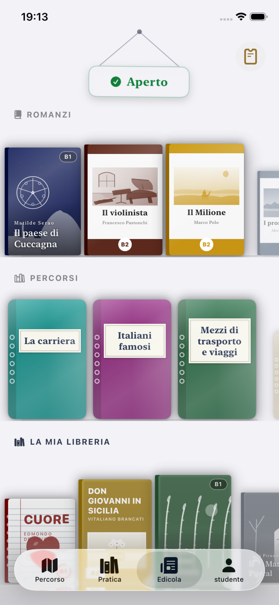
Ogni parola difficile è a portata di tap: definizione dry, note del prof su contesto e cultura, sinonimi e famiglie di parole. Comprensione guidata mentre leggi, senza uscire dal romanzo.
Leggi la letteratura italiana dal primo giorno, senza sentirti sopraffatto.
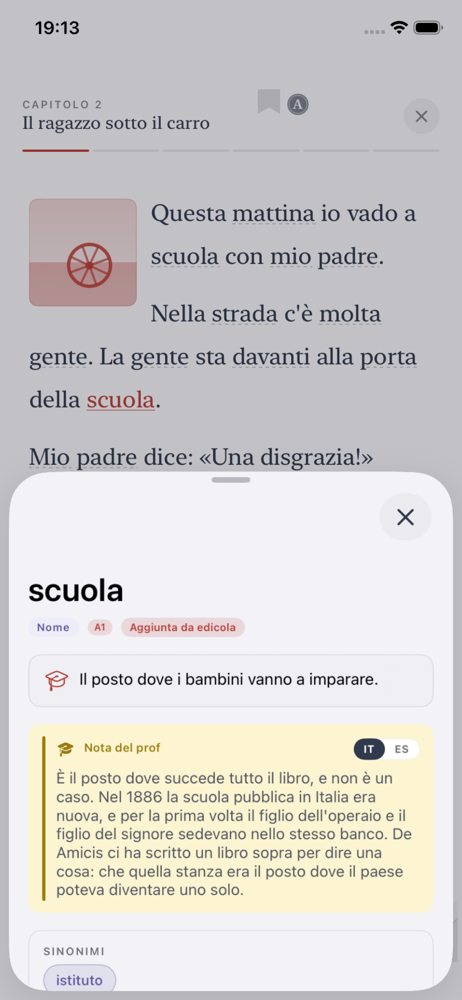
Non solo inglese, come quasi tutte le altre app. Ti è pensata anche per chi vive e lavora in Italia e non trova mai la propria lingua nelle altre app: albanese, arabo, bengalese, cinese, francese, inglese, olandese, portoghese, rumeno, spagnolo, tagalog, tedesco, tigrino, ucraino.
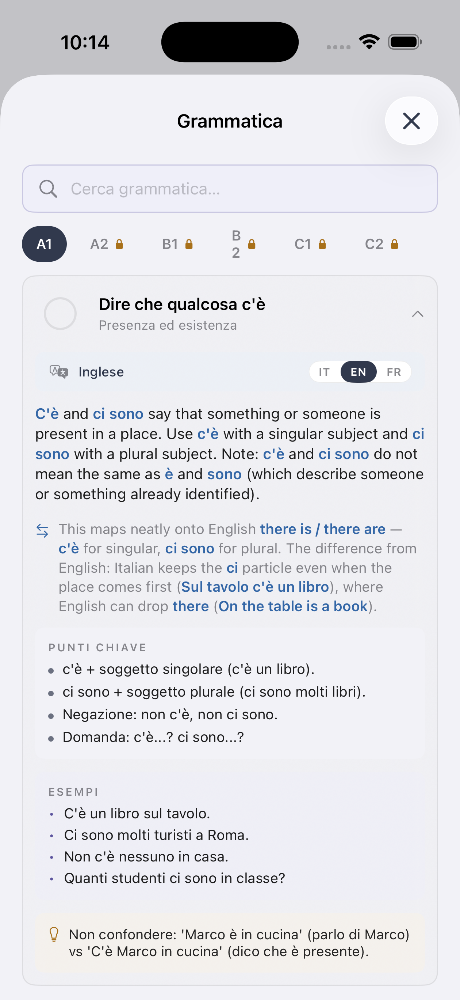
Vivi o lavori in Italia e vuoi capire come si parla davvero.
Prepari una certificazione (CILS, CELI, PLIDA).
Vuoi finalmente leggere Pirandello in originale.
Ami la cultura e la letteratura italiane.
Scarica Ti e comincia il percorso. Il download è gratuito, il percorso QCER e il dizionario sono inclusi.
Scarica su App Store